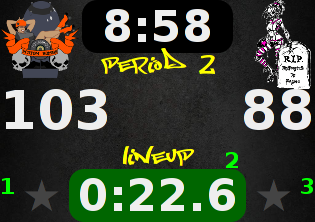

This is a free WFTDA-rules scoreboard, created with ease-of-use in mind. It is known to work on PC, Mac, Android, iOS, or Linux, using any common web browser.

You can try it right now--it
runs in a web browser (but doesn't require Internet access).
Watch a 5-minute video tutorial or read the Full documentation which comes bundled with the download.
Download the latest version to your hard drive to run a scoreboard without Internet access (recommended: watch how). This includes the documentation.
If your scoreboard computer has an Internet connection, you don't need to download anything at all. Just load up the full-screen version from this page and you're all set.
You can also browse the source tree or clone it with git:
git clone http://woozle.org/~neale/projects/scoreboard
If you'd like me to add your team logo, have an idea for improvement, or just want to say hi, please send me an email. I especially like hearing from people who are using the software: I love knowing I'm able to help people out.
Neale Pickett <neale@woozle.org>